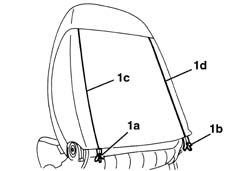
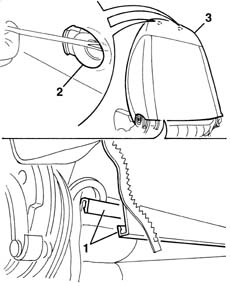
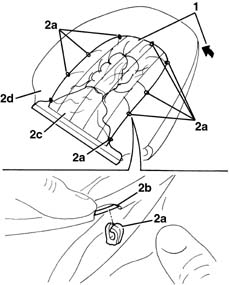
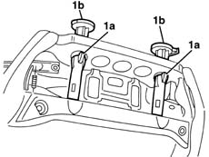
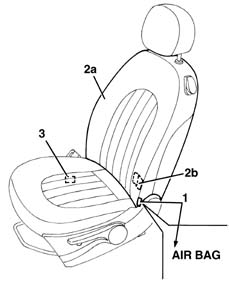
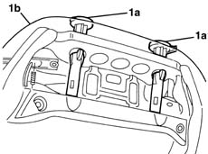

7045D30 Front seat BACKREST COVER, left or right - R.R.
- Path
- Procedures > 70 FITTINGS > 7045 FRONT SEATS > 7045D FRONT SEAT COVER/UPHOLSTERY > 7045D30 Front seat BACKREST COVER, left or right - R.R.
- Kind
- repair procedure (removal / refitting; the operation number is the code)
- Applies to
- all engines; all production periods
- Interactive page
- https://sloeber94.github.io/elrnDB-lYpsln/en/#/2429635
Applies to: all engines; all production periods
Applies to: all engines; all production periods
 Removing
Removing
 Refitting
Refitting7045A44 seat interior guard - r r
7045A56 LEVER controlling DRIVER'S seat height adjustment device - R.R .
7045A43 seat exterior guard - r r
7045B10 l/h or r/h front seat head restraint - r+r
7045A48 LEVER and TRIM for folding backrest - R.R.
1. Open the hinges (1a) and (1b) along sections (1c) and (1d).

Applies to: all engines; all production periods
1. Disconnect the lower two ends of the backrest cover connected to one another.
2. Release the backrest cover from the head restraint bushes.
3. Remove the backrest cover and upholstery.

Applies to: all engines; all production periods
1. Release the cover from the perimeter of the upholstery.
2. Using a screwdriver, release the retainers (2a) from the metal wire (2b) for the cover and separate the cover (2c) from the upholstery (2d).

Applies to: all engines; all production periods
1. Release the retainers (1a) and remove the head restraint bushes (1b).

Applies to: all engines; all production periods
Refitting
RemovingCheck that the cover is intact and shows no signs of damage.
1. Check that the identifying mark of the Air Bab squab cover is on the same side as the side Air Bag module.
If a new squab cover is fitted, attach the labels as described below.
2. Remove the removable part (2b) of the adhesive label from the new squab cover (2a). Place a copy of the label (2b) in a specific file containing the vehicle details (model, registration data, chassis number) and the serial number of the old squab cover. This file should be kept for future checks.
3. Apply the original label (2b) at the bottom of the seat, where there are already the equivalent labels for seat, side Air Bag module and Air Bag wiring.

Applies to: all engines; all production periods
Position the cover on the upholstery and attach the retainers.
Fit the upholstery complete with cover.
1. Position the head restraint bushes attaching the cover (1b).

Applies to: all engines; all production periods
Connect the two lower ends of the backrest cover to each other.
Mould the cover perfectly and close the hinges.
7045A48 LEVER and TRIM for folding backrest - R.R.
7045B10 l/h or r/h front seat head restraint - r+r
7045A43 seat exterior guard - r r
7045A56 LEVER controlling DRIVER'S seat height adjustment device - R.R .
Topics linked from this page (6)
- 7045A24 squab knob - r r
- 7045A43 seat exterior guard - r r
- 7045A44 seat interior guard - r r
- 7045A48 LEVER and TRIM for folding backrest - R.R.
- 7045A56 LEVER controlling DRIVER'S seat height adjustment device - R.R .
- 7045B10 l/h or r/h front seat head restraint - r+r